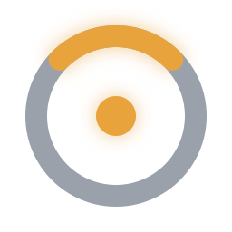
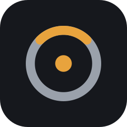

Simbolo sobre oscuro

256
64
32
16 · bandeja
Simbolo sobre claro
64
32
16 · bandeja
Icono de aplicacion

128
48 · barra de tareas
32
16
barra oscura: logo.svg (transparente) vs icon.svg (con fondo)
barra clara: aqui se ve si el aro gris aguanta